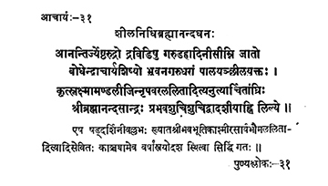

31. आचार्य - 31 - शीलनिधिब्रह्मानन्दघनः
आनन्दी ••• लिल्ल्ये ॥ ६० ॥
एष ••• सिद्धिं गतः ॥
Born on the banks of river Garuḍa (Kaḍilam in Tamil) in the Draviḍa deśa (South India), as the son of Anantārya, he was called Jyeṣṭarudra (before initiation). Having become the disciple of Śrī Bodhendrācārya, he held with sincerity the responsibility of Preceptor-ship of the earth; worshipped by King Lalitāditya of Kashmir who conquered all rival kings on earth Śrī Brahmānandaghana attained liberation on dvādaśī(twelfth day) of the bright fortnight of Jyeṣṭa in the year Prabhava.
Well-versed in the six system of philosophy and adored/worshipped by the well-known poet Bhavabhūti and Kashmir monarch Lalitāditya, this preceptor adorned the pīṭha for thirteen years and attained liberation in Kāñci itself.
